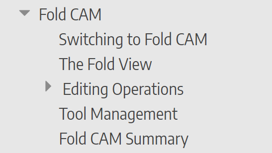

Documentation using Bento
Bento is the tool we use to author online documentation in AsciiDoc format. It is designed to compile a hierarchical set of AsciiDoc pages into a website with navigation mechanisms.
Structure of a Bento page
The image below shows a typical HTML page rendered by Bento.
-
The Logo, Title and Footer sections are all set up in the manifest.txt file that create for the documentation project.
-
The Content Tree provides a collapsible tree-view of all the pages in the documentation project. This is automatically generated from the directory structure of the project and only requires that you create a contents.txt file in each folder that specifies the order in which these pages should appear.
-
The Breadcrumb Navigation provides another way of navigating up the hierarchy of folders, and is useful especially with deeply nested folder structures. This is also generated automatically.
-
The Page TOC (table of contents) for this page is also auto-generated based on the level-1 and level-2 section headings in the page.
-
The Sequential Flow links allow the reader to go back and forth in the documentation like a book. The left-arrow and right-arrow keys can also be used to go to the previous and next pages in the documentation.
Setting up a Bento Project
A Bento project consists of a set of directories (folders), and this folder structure translates into the hierarchical structure of the Content Tree that gets generated.
-
Each folder contains a set of AsciiDoc files (with the extension .adoc). Each of these files gets compiled into a HTML page.
-
The root folder contains a
manifest.txtfile that contains a few settings for the documentation project. Here is a typical manifest.txt file:TITLE = Acme Reference Manual OUTDIR = ../AcmeOutput LOGO = img/logo.png,103,34 COPYRIGHT = Copyright © 2023 by Acme.
-
The OUTDIR setting in the manifest.txt can be a relative path (as above) or an absolute path. Bento will create a folder structure at that output location that matches the source folder structure exactly, except that each .adoc file will be compiled into a .html file.
-
The LOGO is used at the top left. The actual image can be any size, but you should specify as the 2nd and 3rd parameter on that line the width and height - set the height to 34, and the width to a proportionate value (based on the aspect-ratio of your logo image)
-
-
Each folder should contain an index.adoc file that provides the root content for that folder. Typically, this is a short introduction to the topics being discussed in this section of the documentation. You could also include here links to the pages in this section.
-
 Each folder also contains a contents.txt file. This file provides the order in which the .adoc files in that folder are listed (in the Content Tree on the left). This file simply lists each source .adoc file, and each sub-folder that should be considered. Files are represented with the names (without the .adoc extension), while folders are represented with names enclosed in square brackets. For example, below is a typical contents.txt file that is part of the Fold CAM folder, and the image on the right shows how it renders in the Content Tree.
SwitchingToFold FoldView [Editing] ToolManagement FoldSummary
In this example, there are content files with names like SwitchingToFold.adoc, FoldView.adoc etc. And there is a subfolder called Editing. As you can see, the order of files and sub-folders in the contents.txt file specifies how the content tree is generated.
Images
The AsciiDoc file can references images, and the convention is to place these in an img sub-folder inside that folder. Then, you should use the :imagesdir: variable to point to the images. Thus a typical document would begin like this:
= Document Title :imagesdir: img Using an image is like this. The image is picked up from the img subfolder, because of the :imagesdir: setting on the previous line. image::welcome.png[Welcome, Width=224]
AsciiDoc attributes
You can use AsciiDoc attributes to support text substitution, and also to support conditional compilation of content. These attributes are often useful when we want to generate multiple flavors of a documentation site to suit different situations.
Conditional attributes
Attributes meant for controlling conditional compilation are simply either defined or not, and they take this form in the manifest file:
ATTRIBUTE=trumpf
Such a condition attribute can be used to include some content only if it set, using the ifdef construct in AsciiDoc. For example, in the content below, the second paragraph is included only if the trumpf attribute is defined in the manifest.txt file.
It is possible to program laser machines, press-brakes and panel-benders, and generate NC code directly. #ifdef::trumpf[] Full integration with the Oseon and Fab systems is also available. #endif::[]
These conditional attributes can also be used in the contents.txt files to include entire topics (or even sub-folders) based on whether an attribute is defined or not. For example, suppose we have a contents.txt file like this:
Introduction CADSketch #if (!trumpf) UIConventions [Cut] [Bend] #if (trumpf) [Fold] [Reports]
Then, the CADSketch page is included only if the trumpf attribute is NOT defined, and the entire [Bend] subfolder of content is included only if the trumpf attribute IS defined.
Substitution attributes
These attributes are used to replace a particular tag with appropriate expansion text. These attributes take the following form in the manifest file:
ATTRIBUTE=appName:Flux ---
For example, suppose a product has different names by which it is marketed in different regions, one could avoid using the actual product name in the documentation, and use instead the attribute tag in curly braces. Assuming an attribute definition as listed above, one could write:
Welcome to \{appName\}!
\{appName\} is an integrated sheet-metal solution.
Invoking Bento
Bento takes a single command line parameter. If this is the name of a directory, then it picks up and compiles the project defined by the manifest.txt in that directory. If this parameter is a filename, then that is assumed to the be manifest file.
Any Bento manifest file must have a filename that ends with manifest.txt (like flux-manifest.txt, for example). This second form is used when there are multiple manifest files for some Bento content, each with different attributes, designed to compile different flavors of the documentation.